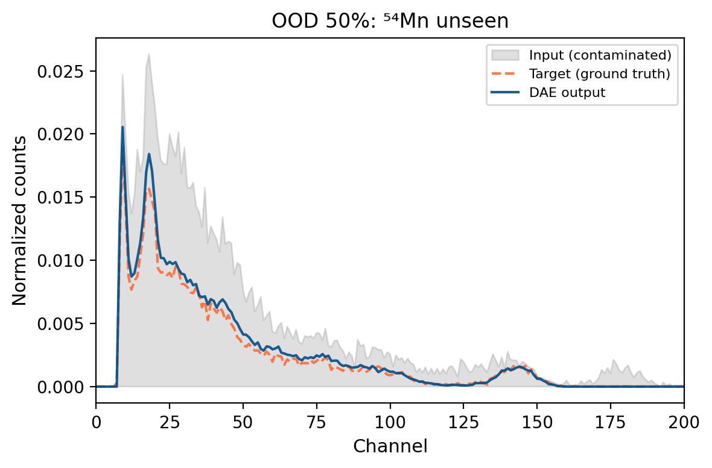

Publications
Journal papers and conference presentations. Group members are in bold.

Journal papers
2026
- C. Kim, “
A denoising autoencoder for dual-target radionuclide quantification robust to unseen contamination and high background,” Nuclear Engineering and Technology, in press. doi:10.1016/j.net.2026.104667
2025
- C. Kim, S. Kim et al., “Development of charge reset multiplexing for SiPMs using deep learning architecture,” Physics in Medicine and Biology 70, 225013.
- C. Kim, M. Park et al., “Deep learning-based radioisotope quantification for extreme environments,” Radiation Physics and Chemistry 239, 113345.
- Y. Kim et al., “Investigation of fast and cost-effective partial defect detector for spent fuel transfer verification to enhance nuclear safeguards,” Annals of Nuclear Energy 212.
- Y. Kim et al., “Biosignal-based attention monitoring for evaluating train driver safety-relevant tasks,” Transportation Research Part F 111. doi:10.1016/j.trf.2025.02.025
- Y. Kim et al., “Enhancement of radiation detectors for verification of CANDU-type spent fuel,” Journal of Instrumentation.
- S. Kim, J. Oh, D. Jeon, I. Kwon, “A dual active quenching circuit with temperature compensation technique for breakdown voltage shift of single-photon avalanche diodes,” IEEE Transactions on Instrumentation and Measurement 74, 2006808.
- S. Kim, J. Oh, D. Jeon, I. Kwon, “A light detector capacitance compensation technique achieving boosted active quenching for single-photon avalanche diodes,” IEEE Transactions on Instrumentation and Measurement 74, 2001908.
2024
- M. Seung, J.-G. Choi, W. Choi, I. Kwon, “Radiation-hardened-by-design preamplifier with binary weighted current source for radiation detector,” Nuclear Engineering and Technology 56(1), 189-194.
- K.-B. Chai, C. Shin, Y. D. Yoon, M. Seung, I. Kwon, “Observation of fast Alfven wave in KAERI plasma beam irradiation facility using an applied-field MPD thruster,” Physics of Plasmas 31, 043513.
- J. Oh, H. Jeong, M. S. Lee, I. Kwon, “Characterization of small single photon avalanche diode fabricated using standard 180 nm CMOS process for digital SiPM,” Nuclear Engineering and Technology 56(8), 3076-3083.
2023
- M. Seung, D. Kim, D. Shin, T. C. Unruh, K. Tsai, W.-Y. Choi, I. Kwon, “In-core neutron detection system using a dual-mode self-reset preamplifier with the micro-pocket fission detector,” IEEE Transactions on Instrumentation and Measurement 72, 2007910.
- C. Kim et al., “Improvement of phoswich detector-based β+/γ-ray discrimination algorithm with deep learning,” Medical Physics 50, 6118-6129.
2022
- M. Seung, W. Choi, S. Hur, I. Kwon, “Cold junction compensation technique of thermocouple thermometer using radiation-hardened-by-design voltage reference for harsh radiation environment,” IEEE Transactions on Instrumentation and Measurement 71, 1-7.
- C. Kim et al., “Development of an energy and efficiency calibration method for stilbene scintillators,” Nuclear Engineering and Technology 54(10), 3833-3840.
2021
- C. Kim, D. Kim, Y. Lee, C. Park, M. N. Ullah, D. Kim, I. Kwon, S. Hur, J.-Y. Yeom, “Radiation resistance and temperature dependence of Ce:GPS scintillation crystal,” Radiation Physics and Chemistry 183, 109396.
- C. Kim et al., “A review of inorganic scintillation crystals for extreme environments,” Crystals 11(6), 669.
- I. Kwon, D. Shin, J. Oh, C.-H. Kim, H. Kim, “Preprocessing energy intervals on spectrum for real-time radionuclide identification,” IEEE Transactions on Nuclear Science 68(8), 2202-2209.
- D. Shin, C.-H. Kim, P. Park, I. Kwon, “Influence and analysis of a commercial ZigBee module induced by gamma rays,” Nuclear Engineering and Technology 53(5), 1483-1490.
- W. Cho, H. Kim, D. Kim, S. Kim, I. Kwon, “Reproduction strategy of radiation data with compensation of data loss using a deep learning technique,” Nuclear Engineering and Technology 53(7), 2229-2236.
- C. Park et al., “Enhancement of the luminescent and optical properties of ceramic Ce:GAGG after surface treatment with phosphoric acid,” Optics Express 29(2), 751-760 (with C. Kim).
- M. N. Ullah et al., “Simultaneous acquisition of ultrasound and gamma signals with a single-channel readout,” Sensors 21(4), 1048 (with C. Kim).
2020
- D. Kim, C.-H. Kim, I. Kwon, “Experimental results on a detector capacitance compensation technique for multiplexing SiPM channels,” Nuclear Instruments and Methods in Physics Research A 954, 161527.
2019
- C. Kim et al., “Digital n-γ pulse shape discrimination in organic scintillators with a high-speed digitizer,” Journal of Radiation Protection and Research 44(2), 53-63.
- M. N. Ullah et al., “A new positron-gamma discriminating phoswich detector based on wavelength discrimination (WLD),” NIM A 946, 162631 (with C. Kim).
- C. Park et al., “Investigation of optical properties of ceramic Ce:GAGG by high temperature annealing,” Journal of the Korean Physical Society 75(12), 962-967 (with C. Kim).
2017
- C. Park, C. Kim et al., “Performance comparison between ceramic Ce:GAGG and single crystal Ce:GAGG with digital-SiPM,” Journal of Instrumentation 12(01), P01002.
Conference presentations
International, by the group lead
| Year | Title | Meeting | Place |
|---|---|---|---|
| 2025 | Poster | IEEE NSS/MIC/RTSD | Yokohama, Japan |
| 2023 | Improvement of phoswich detector-based β+/γ-ray discrimination algorithm with deep learning (poster) | iWoRiD | Oslo, Norway |
| 2022 | Improvement of β+/γ discrimination algorithm based on deep-learning (poster) | iWoRiD | Riva del Garda, Italy |
| 2019 | A depth of interaction radiation detector for high temperature environment (poster) | IEEE NSS/MIC | Manchester, United Kingdom |
| 2018 | Characterization of Pr:LuAG and Ce:GSO for radiation monitoring at high temperature (poster) | IEEE NSS/MIC | Sydney, Australia |
| 2017 | Estimation of gamma-ray activity with stilbene scintillator (poster) | IEEE NSS/MIC | Atlanta, United States |
Invited talks by the group lead
| Date | Title | Event |
|---|---|---|
| Jun 2024 | Radiation measurement using deep learning | AI-based information and communication applications workshop, Korea Institute of Information and Communication Facilities |
| Aug 2023 | Development of a radiation source measurement system inside containment for rapid accident response | Summer workshop on instrumentation and control of nuclear power plants, Korean Nuclear Society |
| Jul 2023 | KAERI severe accident research status: development of instruments for severe accidents | Workshop on severe accident phenomena analysis |
| Feb 2023 | Development of extreme-environment radiation detectors for gamma ray, positron and neutron | Winter workshop on instrumentation and control of nuclear power plants, Korean Nuclear Society |
| Feb 2023 | Development of a circuit and deep-learning system to minimize output channels of photosensor arrays | Winter workshop on instrumentation and control of nuclear power plants, Korean Nuclear Society |
| Feb 2023 | Improvement of positron and gamma ray dual detection probe using deep learning | IEEE NPSS Seoul Chapter |
Conference papers by Minuk Seung, Ph.D.
| Date | Title | Meeting |
|---|---|---|
| 2023 | Radiation-hardened-by-design preamplifier with self-reset technique for radiation detector | IEEE NSS |
| Oct 2023 | Design of radiation-hardened-by-design preamplifier with active dead time control technique (Best Paper Award) | Korea Society of Radiation Industry |
| 2020 | Radiation hardened bandgap reference circuit with OPAMP feedback system | IEEE NSS |
| Oct 2019 | Design of a radiation hardened bandgap reference circuit for cold junction compensation under high radiation environments (Best Poster Award) | Korean Nuclear Society fall meeting |
| 2019 | Design of a voltage subtraction bandgap reference circuit for radiation hardening | IEEE NSS |
| May 2019 | Design of a transimpedance amplifier for a radiation detector to observe a nuclear reactor under severe accidents | Korean Nuclear Society spring meeting |
Accident-response project, selected international meetings
| Date | Meeting | Place |
|---|---|---|
| Sep 2022 | 16th International Conference on Scintillating Materials and their Applications | Santa Fe, United States |
| Nov 2022 | IEEE NSS/MIC/RTSD | Milan, Italy |
| Jun 2023 | 24th iWoRiD | Oslo, Norway |
| Dec 2023 | IEEE NSS/MIC/RTSD | Vancouver, Canada |
| Sep 2024 | SPIE Optics and Photonics | San Diego, United States |
| Oct 2024 | IEEE NSS/MIC/RTSD (four presentations) | Tampa, United States |
| Sep 2025 | IEEE International Ultrasonics Symposium | Utrecht, Netherlands |
| Nov 2025 | IEEE NSS/MIC/RTSD (four presentations) | Yokohama, Japan |